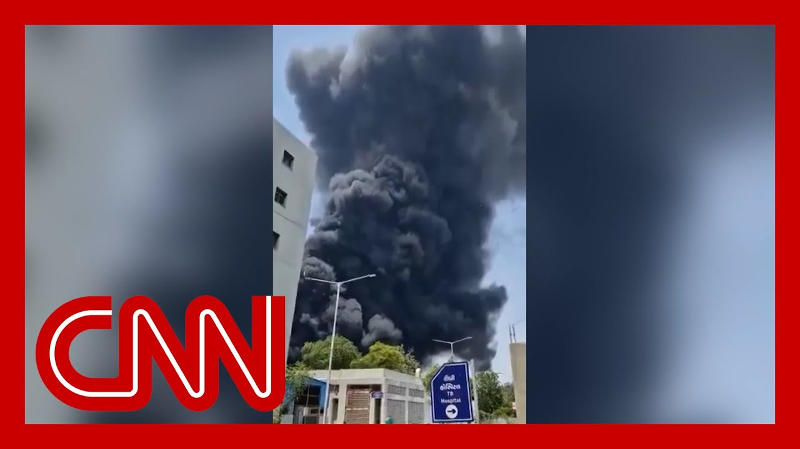

【印度航空飞往伦敦航班坠毁，机上242人】
Summary: Breaking news: An Air India passenger plane crashed at Ahmedabad airport en route to London, with 242 passengers and crew onboard, including 169 Indians, 53 British, 1 Canadian, and 7 Portuguese nationals. Emergency crews are responding amid heavy smoke and debris, while Air India establishes a support center for families.
摘要： 突发新闻：印度航空一架客机在艾哈迈达巴德机场坠毁，该航班原定飞往伦敦，机上载有242人，包括169名印度人、53名英国人、1名加拿大人和7名葡萄牙人。救援人员正冒着浓烟和废墟展开行动，印度航空已设立家属援助中心。

⏱️ Estimated Reading Time: 15 min
📚 六级生词 📚 雅思生词 📚 托福生词 📚 专八生词 📚 SAT生词 📚 考研生词 📚 GRE生词 📚 高考生词
Breaking news out of India this morning, where authorities there say a passenger plane has crashed at an airport at an airport in Ahmedabad.
今晨印度突发新闻，当局称一架客机在艾哈迈达巴德机场坠毁。
This video shows heavy black smoke near the airport.
视频显示机场附近浓烟滚滚。
Air India has confirmed that it was one of its planes that was traveling to London.
印度航空证实失事飞机系其旗下飞往伦敦的航班。
We're going to bring in now CNN, Salma, Abdulaziz.
现在连线CNN的萨尔玛和阿卜杜勒阿齐兹。
Salma, what details have you learned so far?
萨尔玛，目前你了解到哪些细节？
We JUSt received word that there were 242 passengers and crew on board that flight, 242 souls.
我们刚获悉机上共有242名乘客和机组人员。
And when, of course, you look at these images, Audie, that we are looking at of this thick black smoke pluming from the site of the accident of emergency crews rushing to that scene, it is very difficult to imagine if any of those 242 souls have survived this crash, which happened less than a minute after takeoff at only 625ft.
奥蒂，从这些画面中看到事故现场浓烟冲天、救援人员赶赴现场，很难想象242人中还有生还者——飞机起飞不到一分钟、仅爬升至625英尺高度时便坠毁。
Of those 242 people on board, 169 are Indian nationals, 53 are British nationals, one Canadian national and seven are Portuguese nationals.
机上242人中，169人为印度籍，53人为英国籍，1人为加拿大籍，7人为葡萄牙籍。
That's according to an Air India statement.
印度航空声明中公布了这一信息。
The airliner has also set up an emergency services center to provide support to the families and to provide support to those emergency crews on the ground.
航空公司已设立紧急服务中心，为家属和地面救援人员提供支持。
We've also heard from India's civil aviation minister, who says he is doing his utmost to provide whatever is needed for those rescue workers on the ground.
印度民航部长表示正全力满足地面救援人员的需求。
But you look at those scenes again, the charred buildings, the crowds, the residents, you wonder how big the epicenter of damage is when it comes to this plane crash.
再看那些画面——烧焦的建筑、人群、居民，不禁让人思考这次空难的破坏核心范围有多大。
This plane was also supposed to land here in London at about 630 local time at Gatwick.
该航班原定当地时间6:30降落在伦敦盖特威克机场。
We've heard confirmation from Gatwick that that flight was expected, which means that this that families on this side could also be asking questions this morning as they try to find out again what happened to the 242 people on board that flight.
盖特威克机场确认该航班原定抵达，意味着伦敦这边的家属今晨也在焦急追问机上242人的情况。
For now, the focus is, of course, on the scene of the crash where emergency rescue workers are working right now through the rubble, through the charred buildings to the fires that you're seeing on your screen there.
当前焦点当然是坠机现场，救援人员正在废墟和燃烧的建筑中作业。
And the other focus, of course, the other epicenter, of course, is going to be this emergency services center that's been set up by Air India.
另一个焦点则是印度航空设立的紧急服务中心。
You can expect that family members will be rushing there with questions, with fear, with worry and concern.
可以想见家属们将带着恐惧与忧虑涌向那里。
Audie.
奥蒂。
Joining me now to discuss CNN transportation analyst Mary Schiavo, Mary, first, let's just talk about it taking off and apparently crashing so soon after takeoff.
现在连线CNN交通分析师玛丽·席亚沃。玛丽，首先谈谈飞机起飞后旋即坠毁的情况。
What are you thinking as you hear the early reports about what's happening?
听到初步报告时你有何分析？
Well, as I hear the early reports, a 787 Boeing Dreamliner, this will be the first major crash, the first crash of a Dreamliner.
根据初步报告，这是波音787梦幻客机的首次重大空难。
And as we can see, there's also some footage floating around out there on the internet.
目前网络流传着一些现场视频。
If it's correct, it does appear that the plane, was just after takeoff.
若视频属实，飞机确实刚起飞就出事。
I don't see any flaps deployed now.
我未观察到襟翼展开。
Flaps are like little winglets on the back of the plane.
襟翼是机翼后缘的辅助装置。
Little, little parts of the wing that help give it lift.
这些小型翼面能为飞机提供升力。
And you use those at various parts in the flight.
飞行各阶段需调节襟翼。
I don't see those deployed.
但视频中未见其展开。
And also the important clue is that the pilot was able, according to unconfirmed reports, able to get off a mayday call.
另一关键线索是未经证实的报告称飞行员发出了Mayday求救信号。
That means that the pilots knew they had a problem, some kind of a problem on the plane.
这表明飞行员意识到飞机出现故障。
We don't know yet if it's a mechanical or some other issue, but by being able to communicate that Mayday call, we do know that the pilots were having trouble with the plane.
尚不确定是机械故障还是其他问题，但求救信号证明飞行员当时已遇险情。
So already there are many, many clues.
目前已有诸多线索。
But the explosion that was recorded on some tape does, that's floating on the internet unconfirmed does not look like it was.
不过网络流传的爆炸视频若属实，情况似乎很不乐观。
Would have been a survivable crash, I should say.
应该说生还可能性极低。
We're showing images that we've been able to verify a caution people out there about what you're seeing on the internet.
我们正在播放经核实的画面，提醒观众谨慎对待网络信息。
But the images we're seeing here are incredibly striking.
但眼前的画面确实触目惊心。
We're having people hand pull away luggage, and materials from that crash scene.
看到人们徒手从现场搬运行李和残骸。
You mentioned the Dreamliner.
你提到梦幻客机。
What's significant about that?
其特殊性何在？
What was significant about this style of plane that, draws your attention to it being the first to be in a crash was significant as it, was.
作为首架坠毁的该型号飞机，其特殊性在于——
So, you know, when it when it came on the market now, admittedly several years ago, you know, the newest, it had a lot of features on that aircraft that made the aircraft, how should we put this?
数年前上市时，它作为最新机型配备了许多特性——
It made the aircraft less susceptible, supposedly, to pilot errors.
理论上能降低飞行员操作失误风险。
It had a lot of additional, flight assists and other equipment.
拥有大量飞行辅助设备。
and, of course, people will be thinking immediately about the the Boeing crashes of the two, 737 Max eight aircraft.
人们难免联想到此前两架波音737 MAX 8的空难。
Not the same as this one.
虽与本次机型不同。
But in the course of that investigation, it was revealed that there was a lot of equipment on that plane that took the control away from the pilots, and that turned out to be deadly.
但调查显示该机型存在过多剥夺飞行员控制权的装置，最终酿成悲剧。
It was called the MCAs, which drove the plane into the ground against the commands of the pilots.
MCAS系统曾违背飞行员指令导致飞机俯冲。
Now, from the video that's out there, and what happened is did the aircraft in those crashes push the nose down?
根据现有视频，此前空难中飞机是否出现机头下压？
The pilot pulled it up.
飞行员拉升机头。
The plane kept pushing the nose down.
飞机却持续下压。
I don't see that in the one very short video clip, but some of the equipment is the same.
短暂视频中未见此现象，但部分设备相同。
And this is not the same aircraft as those two prior Boeing crashes.
不过与之前两起波音空难机型不同。
But that will put tremendous pressure on Boeing, on the investigators, on the regulators to say, see if there is any correlation between those crashes and the computer equipment and computer programing on this plane, which is, like I said, the newest, most modern plane of the Boeing fleet.
这将给波音、调查人员和监管机构带来巨大压力，需排查此次空难与之前事故中计算机设备的关联——毕竟这是波音最新款客机。
The last time we had you on CNN this morning, I believe you were talking about, the crash in the Potomac and you were talking about the difficulties created and having a recovery or a rescue scene over water with this.
今早你刚在CNN讨论过波托马克河空难及水上搜救难点——
It looks like it's right in a city.
而这次坠机发生在城市。
People are pulling, some of this debris away from buildings, charred buildings.
人们正从烧焦的建筑中清理残骸。
how do you even begin to investigate something that is, in a scene like this?
此类现场该如何展开调查？
Well, you know, they and they've and, you know, sadly, investigators had to have had to do this hundreds, literally thousands of times.
遗憾的是调查人员已处理过成百上千起类似事件。
And so what will happen next?
接下来流程如何？
Is it literally an international team of investigators?
将组建国际调查团队。
It will be the air.
印度调查组将主导——
It will be the Indians team.
印度调查组将主导。
They will be the lead investigators because it happened in India.
因空难发生在印度。
the United States, National Transportation Safety Board will attend because it's a Boeing aircraft.
美国国家运输安全委员会将参与，因涉事飞机为波音制造。
So they will be invited into the investigation because the aircraft was made in the United States.
飞机制造国有权加入调查。
And, England will be involved, UK because there will be many passengers on there and it was bound for England.
英国也将参与，因航班目的地为英国且有多名英国乘客。
So it will be an international group of investigators.
故将形成国际调查组。
But the first thing they do is, of course, you know, try to remove all any survivors and of course all remains.
首要任务是搜寻幸存者与遇难者遗体。
And then they're going to be looking for those black boxes.
随后寻找黑匣子。
This aircraft has the newest, most modern version in the world of black boxes.
该机型配备全球最先进的黑匣子。
It will record, you know, hundreds of different settings on the plane.
可记录数百项飞行参数。
If it was having a mechanical, chances are it will be recorded on the flight data recorder if the flaps were not set correctly, for example, it will be on the flight data recorder.
若存在机械故障（如襟翼设置错误），飞行数据记录仪将留存证据。
and the cockpit voice recorder will record whether or not there was a mayday call and what they were able to say they perceived going wrong with the aircraft when they got the Mayday call out, if that's correct.
驾驶舱语音记录仪将验证是否发出Mayday信号及飞行员对故障的描述。
So the next order of business will be to get those black boxes because the plane was American made, they will likely be downloaded.
接下来需获取黑匣子——作为美国制造飞机，数据可能在美国下载。
The data will be downloaded in the United States outside of Washington DC.
数据可能在华盛顿特区外的实验室下载。
There's a lab, but it doesn't have to be.
但并非必须。
India can do it to Britain can do it.
印度或英国也可完成。
so those would be the first steps in the investigation, in addition to, of course, identifying and getting the passenger list, the manifest of who, you know, who all was on board notifying everybody and setting up was called a care team.
调查初期步骤还包括确认乘客名单、通知家属及组建关怀团队。
The airlines are required to have a care team to care for, the families, to care for the persons who, you know, may have survived, to provide medical care, counseling, care, immediate cash support to those families of anyone on the plane to get there, to hear the briefings on the investigation, etc..
航空公司须通过关怀团队为家属和幸存者提供医疗、心理及经济支持，并通报调查进展。
So there are a lot of moving parts right now, most of which are all covered by regulations and by international laws and treaties.
当前多方协同运作，大多依据国际法规条约进行。
because it was an international flight.
因本次属国际航班。
So it will be rather, according to the book, as they say, and, those very same laws, regulations and treaties will require initial preliminary port report within 30 days.
将严格按规程操作，相关条约要求30天内提交初步报告。
So, and sadly, this will not be the first go round on these kinds of investigations.
遗憾的是此类调查并非首次。
We've seen an awful lot lately.
近期已屡见不鲜。
So the person I'm bringing in now, former Deputy Assistant Secretary of State Joel Rubin, is here to talk more.
现在连线前副助理国务卿乔尔·鲁宾深入探讨。
Joel, one of the reasons why I wanted to talk to you is because there were 53 British nationals, but also a Canadian, seven Portuguese nationals, as well as 169 people from India.
乔尔，邀请你是因为机上53名英国人、1名加拿大人、7名葡萄牙人及169名印度人——
That's a lot of families, a lot of people who are reaching out to whom.
涉及大量需联络的家属。
And what do diplomats end up doing in these situations?
外交官在此类事件中扮演什么角色？
You got a lot of and, and first of all, what a horrible moment.
首先，这无疑是可怕时刻。
And and thank you for for discussing it this morning so extensively.
感谢你今早深入分析。
at the State Department, what happens is you have, essentially the operation center kicks in and creates a task force that begins to mobilize to deal with all of these questions.
国务院会启动行动中心组建工作组应对相关问题。
So our consular bureau will send a representative to it.
领事局将派代表参与。
the bureau that handles South Asia will send a representative to it, and they'll begin coordinating with all of the airline infrastructure that's needed to be engaged.
南亚事务局也将介入，协调航空公司相关事宜。
And this is, for instance, Air India has to have we heard from Mary Schiavo, care team, for people and families to reach out to.
如玛丽所述，印度航空需组建关怀团队对接家属。
But this is all about diplomatic communication.
这本质是外交沟通。
So we don't know if there are any Americans.
尚不确定是否有美国公民。
So we don't think there any Americans, but we don't know.
目前认为没有，但需确认。
And there may be many dual citizens who are Indian as well.
可能存在同时持有印度国籍的双重公民。
and so figuring that out, working with our consulate on the ground in Ahmedabad, working with our embassy as well in, in New Delhi and getting a real lay of the land and what the U.S. government then should be thinking about in terms of providing assistance, which is the sort of overarching American diplomatic role as well.
需通过驻艾哈迈达巴德领事馆和新德里大使馆核实情况，确定美国政府应提供的援助——这也体现美国的外交总体角色。